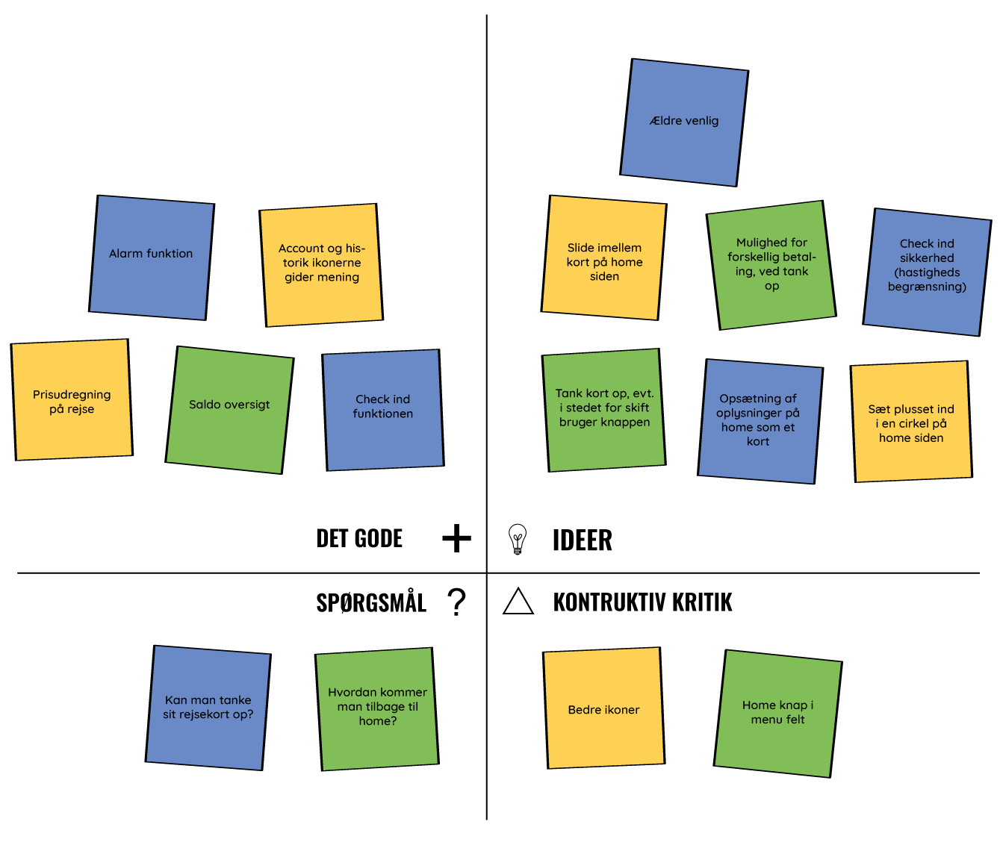

af Charlotte Mundt, Nadja Uhrenfeldt, Michelle Renee Jensen, Julie Bagerskov
Design thinking er et værktøj, der giver rammerne for at tænke kreativt, eksperimenterende, iterativt og
systematisk, når der arbejdes med produktudvikling.
Fase 1 - Understand
I den første fase, skulle vi lære brugerne at kende, forstå dem, og 'empathize' med dem. Det gjorde vi ved
at opservere dem, og interviewe dem.
Problemstillinger
Vi skulle finde ud af, hvilket problem vi ville arbejde med i dette projekt.
Vi startede ud med, i fællesskab
skulle komme i tanke om så mange problemstillinger omkring trafik som muligt. Herefter satte alle deres idéer på
tavlen, og valgte vi hvilke vi syntes der var mest spændende at arbejde med. Det her var de emner vi i første
omgang gerne ville arbejde med:
Rejsekortet
Glemsomme rejsende
Problemer med rejsekortets teknologi
At det koster penge at få et ny kort
At man ikke kan flytte penge mellem kort
Check ud problemer
Efter vi fik snakket en masse frem og tilbage, fandt vi frem til, at det skulle være check-ud problemer med
rejsekortet vi ville arbejde med.
Observationer
Vi tog ned på Lyngby st., hvor vi observerede pendlerne og hvordan de interagerede med deres rejsekort. Da vi
var der klokken 10 (uden for myldertiden), var det lidt begrænset hvor mange der rejste med deres rejsekort.
En tendens vi lagde mærke til, var at når rejsekort-brugerne havde checket ind, blev de ved med at holde
kortet i hånden, i stedet for at lægge det væk.
Da vi alle 3 også selv benytter rejsekort en gang i mellem, var det noget vi kunne genkende fra os selv.
Selvom vi ikke var der i myldertiden, stod folk stadig i (små) køer for at tjekke ud, da der kun er 3
standere på hele stationen. Så vi kan kun forestille os, hvor irriterende det kan være at bruge rejsekort i
myldertiden, hvis man skal stå i lange køer, for at kunne checke ud, så man ikke ender med en bøde.
Vi fik taget et par billeder af brugerne af rejsekort på stationen.
Mand med hat, checker ud med rejsekortÆldre mand checker ud med rejsekort
Interviews
Efter vi havde observeret rejsekort-brugerne på Lyngby St. interviewede vi 3 personer, om deres
rejsekort-forbrug, og ikke mindst, deres problemer med at checke ud med rejsekort. Hvad enten det har været
maskinerne der ikke har virket, eller fordi man har glemt at checke ud.
Den første person vi interviewede, var semi-tilfreds med rejsekortet. Hun bruger det hver dag, men mangler
virkelig en funktion, så hun kan få en kvittering på hendes rejser (kan man ikke med anonymt rejsekort), til hvis
hun skal have rejsen refunderet af hendes arbejdsplads. Hun har før glemt at checke ud, og har derfor fået
kendskab til Rejsekorts app 'check udvej', til disse situationer. Hun er dog ikke imponeret over den, da den
er ret besværlig at bruge. Hun mener rejsekortet er blevet en del bedre end det var i starten, men at der helt
klart stadig er plads til forbedring.
Anden person vi interviewede var meget optimistisk omkring rejsekort. Hun synes det er en virkelig god
opfindelse. Hun bruger rejsekortet meget, og har ikke haft nogle dårlige oplevelser med det. Hun har glemt at
checke ud et par gange, men har bare betalt "bøden" hun har fået. Hun kendte ikke til Rejsekorts app 'check
udvej', og virkede egentlig heller ikke til at gide at sætte sig ind i appen. Hvis hun skulle bedømme
rejsekort på en skala fra 1-5, hvor 1 er dårlig og 5 er godt, var det en klar 5'er.
Vores tredje interviewee bruger kun rejsekortet en gang i mellem. Hun mente det var omkring 4 gange om året,
når hun ikke kunne bruge bilen. Hun synes der alt for tit er problemer med, så det gør det besværligt at bruge
. Hun har haft problemer med, at maskinen på stationen ikke har registreret hendes kort, som resulterede i en
ikke så behagelig diskussion med en togkontrollør. Hun kendte ikke til 'check udvej' appen, men ville godt
sætte sig ind i den, hvis hun glemmer at checke ud.
Vi spurgte hende, hvad der kunne gøre det nemmere at bruge rejsekort, og der mente hun, at der burde være et
bedre system, til når man rejser flere på ét kort, da man ikke kan se om den rent faktisk har checket alle ind
. Det skulle også være nemmere at tanke et upersonligt rejsekort op. Hun syntes alt i alt, at rejsekortet er
super smart når det virker, men at der er for mange fejl.
Ud fra vores 3 interviews, har vi lavet et user empathy map.
User empathy map
Fase 2 - Ideate
Ud fra vores undersøgelser, har vi fundet lidt spørgsmål vi kan stille os selv, til at finde frem til nogle gode og spændende idéer.
Spørgsmålene vi kom op med:
Hvordan kan vi undgå at folk glemmer at checke ud?
Hvordan kan vi gøre det nemmere at bruge et anonymt rejsekort?
Hvordan kan vi gøre brugeroplevelsen til en bedre oplevelse?
Hvordan kan vi undgå driftproblemer?
Hordan kan vi sørge for, at man kan checke ud, uden at have kortet fremme?
Disse spørgsmål blev vi ved med at spørge os selv, da vi brainstormede over idéer til løsninger af problemerne med rejsekortet.
Brainstorm
Vores brainstorm endte med at se sådan her ud.
Ud fra vores brainstorm begyndte vi at konceptudvikle på 4 idéer.
Check ind/ud app med placeringsregistrering
Denne idé går ud på, at vi ville udvikle en app, hvor man kan checke ind og ud, uden brug af det fysiske kort. For at det kan lade sig gøre, er det et krav at mobilens placering skal være aktiveret.
Når du står på en station, eller ved busstoppestedet, åbner du app’en op, og trykker check ind. Telefonen kan se hvor du er, og ved derfor hvilket stop du er checket ind ved.
Når du skal afslutte din rejse, trykker du på knappen check ud, og igen ved telefonen hvor du er, og hvor du har afsluttet din rejse. Herefter bliver prisen udregnet som den bliver nu.
App’ens udseende skal være virkelig simpelt og nemt at finde rundt i. På hovedsiden er der en kæmpe blå knap, hvor der står check ind. Når du er checket ind, skifter knappen til en lige så stor blå knap, der står check ud på.
Ud over at kunne checke ind og ud, kan man også se ens saldo, og tanke “kortet” op.
For at man ikke glemmer at checke ud på sin rejse, vil der også være en timer-funktion. Her kan du indstille den efter hvor lang tid du regner med, at rejsen vil vare, så du bliver påmindet om at checke ud.
Når du har påbegyndt en rejse, vil der også være en notifikation på din startskærm, der ikke forsvinder før du afslutter din rejse. På denne låseskærm vil der også være en knap til du kan checke ud. Denne notifikation kan ikke swipes væk, før rejsen er afsluttet.
Sensorregistrering i toget
En idé er sensorer i toge og busser. Vi har 3 forskellige muligheder at gøre det på.
Vores første mulighed er, at der skal installeres sensorer i togenes indgang, så i det man træder ind i toget, bliver kortet checket ind, og du er klar til rejsen.Når du igennem sensoren igen, bliver du checket ud. Skal du videre med et tog mere, eller en bus, bliver du checket ind igen, og rejsen fortsætter. Her er det eneste krav, at du har dit rejsekort på dig.
Anden mulighed er, at der bliver sat sluser op ved alle indgange til stationerne, hvor man bliver checket ind når man går ind på en station, og checket ud når man går væk fra en station. Den vil automatisk registrere, at hvis du allerede er checket ind, så bliver du checket ud.
Den tredje mulighed ville være, at i togene og busserne, bliver der sendt nogle bølger ud, hvert 5. sekund, som registrerer alle de rejsekort der er rejser med med toget eller bussen. Når bølgerne begynder at registrere at rejsekortet er i nærheden, det vil sige i toget eller i bussen, bliver man checket ind. Når bølgerne ikke længere kan se rejsekortet, bliver man checket ud.
Stationsskiltning evt. med lidt humor
Brugerne af rejsekortet skal huskes på at checke ud. Det kan fx gøre ved hjælp af nogle store skilte, som hang på vej væk fra toget. Disse skilte måtte gerne have en smule humor, som kan få brugeren til at smile lidt.
Check ind/ud standere i toget
Check ind/ud standere i togene, ligesom i busserne. Her skal check ind standeren være på ydersiden af toget og check ud standeren skal være på indersiden af toget.
Check ud sidder på ydersiden, så man nemt lige kan checke ind, på vej ind i toget. Der vil sidde en på hver af dørene, så så mange som muligt kan komme hurtigt ind i toget.
Check ud sidder på indersiden af dørene, så man har mulighed for at checke ud når toget nærmer sig stationen, eller når man er på vej ud af dørene.
Standerne er kun aktive når togene er i nærheden af stationerne. Det vil derfor ikke være en mulighed at snyde med at checke ind og ud i løbet af køreturen.
Fase 3 - Experiment
Rejsekorts app, var den idé vi valgte at arbejde videre på. Vi gik igang med at samle vores idéer til app'en,
og begyndte på en grov prototype.
Vores første skitser af rejsekortets app.
Prototype
Ud fra skitserne, tegnede og klippede vi vores prototype, og farvelagde den en lille smule.
Vores prototype vi har testet på nogle brugere, ser således ud:
Vi testede vores prototype på nogle brugere, og fik en masse gode noter og tips.
Feedback capture grid
Vi fik en del noter fra vores tests, som vi brugte til at lave et feedback capture grid.

Vi har nu fået en helvedes masse idéer til ting og funktioner der kan tilføjes, eller gøres bedre. Samt lidt
idéer og anbefalinger til layoutet af app'en.